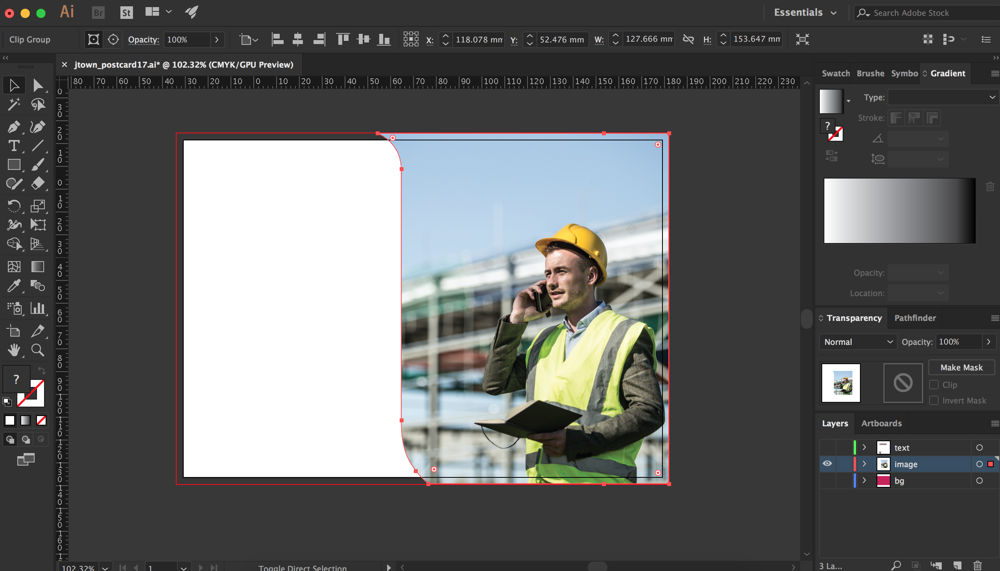

Ten
Postcards & Adverts

In the week leading up to Christmas break, all the last minute bits are being finalised and checked over. On Tuesday I got two design jobs; an advertisement for the CIBSE Guide to careers in Building Services and a postcard invitation for the School of the Built Environment's open morning.
I decided to work on the postcard invitation first. I was sent a word document which contained a screenshot of a PDF file of the invitation which was used in the previous year.
As this was the only 'template' they had, I had to work from scratch. I started off by searching the Image Bank for an image which portrayed the Built Environment, and once I had found this I started looking at graphic devices which I could use on the postcard to contain the image.
I decided to utilise the 'U' in Ulster University's logo as it had smooth curves which made it visually interesting, but kept it clean and simple, and positioned it to the right side of the front. I added the details to the left and coloured the background in the Faculty pink.

On the back I put the text which was provided for me, and made a space for the stamp to be placed. Julie was happy with the postcard and no changes were to be made.
Next up was the advertisement for the magazine. The CIBSE Guide to Careers in Building Services wasn't being published until February, but it was crucial to get advertisements in as early as possible to secure their spot in a magazine printed for an audience of around 20,000. The magazine will be in both printed and digital forms, so I knew to create two files in CMYK and RGB to ensure the Ulster University colours would be presented correctly. My only requirements were the dimensions provided, that the file should be a PDF and that the University wanted an image of James Nesbitt and a specific blurb of text which I was provided with.
I again looked at using graphic devices for this advertisement, but I experimented a little more with this one and rotated/reflected the devices to create different shapes.
In order to fit the required text onto the advert without it being too small, I decided to place the image along the top of the document. Having the image the full width of the advertisement meant that there would be more room for the important details - with this advertisement the image should serve as the attention-grabber, not the main focus.
(Update: Over the Christmas break it was decided that the budget for this advertisement would be used elsewhere, so the work was scratched. I was surprised when I heard this, but priorities in large companies can change.)
Alongside this there were a lot of small changes made to the PhD Opportunities section of the website this week, as the professors decided they wanted the wording changed or if the topic was being dropped by one centre and picked up by another. Whilst jobs like this don't typically make much on an impact to the website, it's the attention to detail that is important. I've come to learn that the tone of voice is a crucial step to ensuring that the content is relevant and attracts the right kind of people.
Placement Journal
Paige Boyd